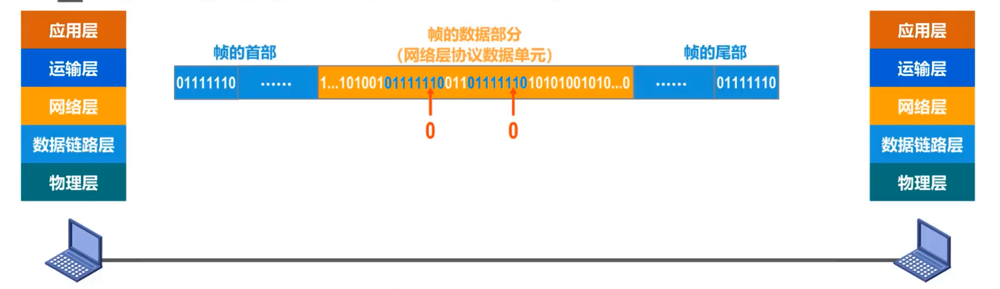
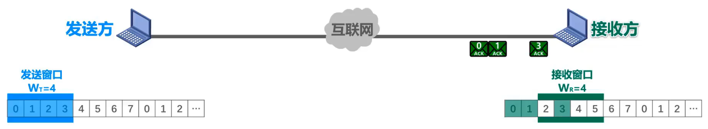
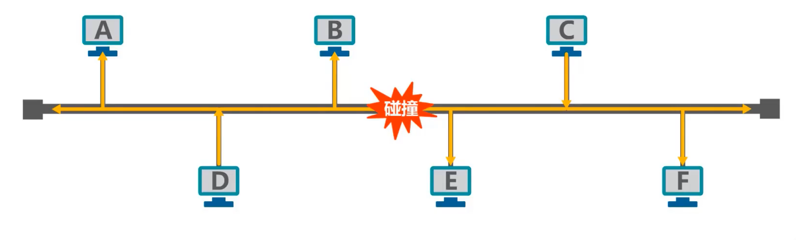
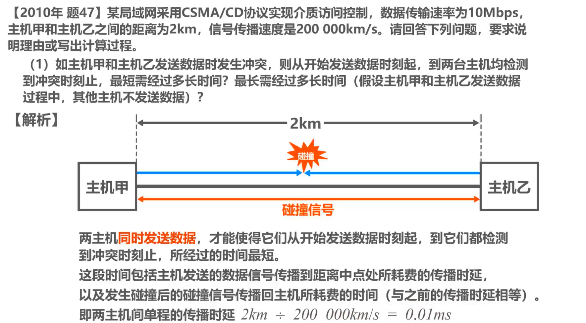
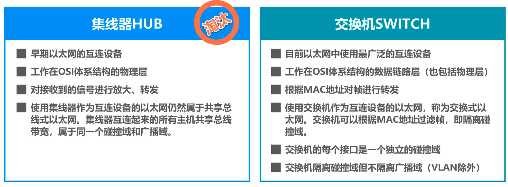
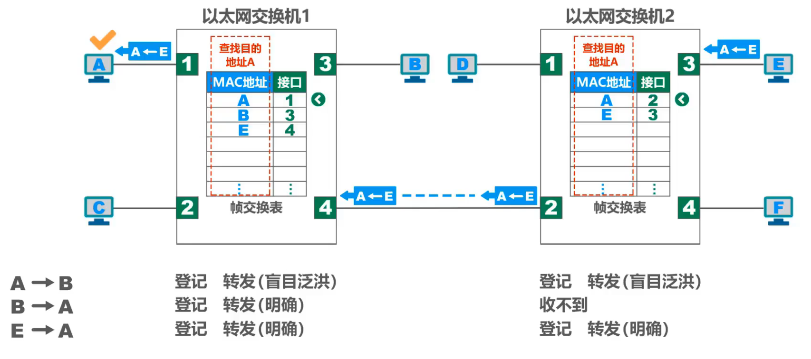
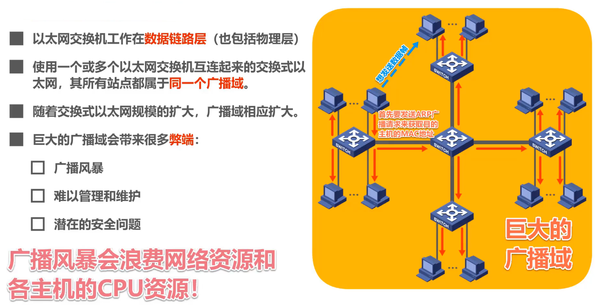
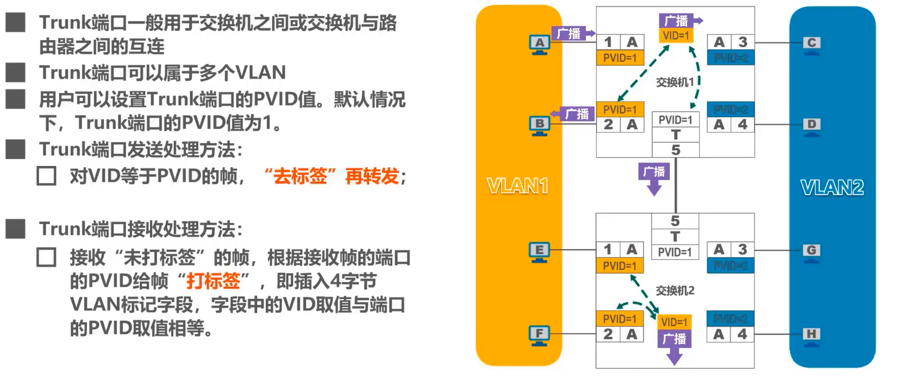
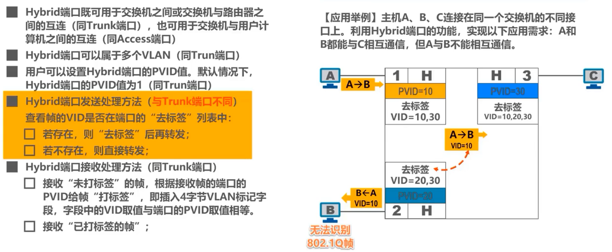

数据链路层
链路就是从一个结点到相邻结点的一段物理线路，而中间没有任何其他的交换结点。实现通信协议的硬件和软件加到链路上，就构成了数据链路。数据链路层以帧尾单位传输和处理数据。
数据链路层
概述
在大多数据情况下，我们可以只关心数据链路层，而不考虑网络体系结构的其他各层。也可以想象，数据包只在数据链路层从左向右沿水平方向传送。从数据链路层来看，主机H1到H2的通信，可以看成是在4段不同链路上的通信组成的。
- 链路：就是从一个结点到相邻结点的一段物理线路，而中间没有任何其他的交换结点。
- 数据链路：是指把实现通信协议的硬件和软件加到链路上，就构成了数据链路。
- 数据链路层以帧尾单位传输和处理数据。
封装成帧
封装成帧是指数据链路层给上层交付的协议数据单元添加帧头和帧尾使之成为帧。
帧头和帧尾中包含有重要的控制信息；帧头和帧尾的作用之一是帧定界，接收方的数据链路层可以从物理层交付的比特流中提取一个个的帧。
以太网V2的MAC帧在帧头和帧尾中没有包含帧定界标志，这种，物理层会在MAC帧前面添加8字节前导码，然后再将比特流转换成电信号发送。前7字节为前同步码，作用是使接收方的时钟同步。1字节为帧开始定界符，表明后面跟着的就是MAC帧。
以太网还规定了帧间间隔时间为96比特的发送时间。因此，MAC帧并不需要帧结束定界符。
透明传输是指数据链路层对上层交付的传输数据没有任何限制，就好像数据链路层不存在一样。在发送帧之前，对帧的数据部分进行扫描，每出现一个帧定界符，就在其前面插入一个转义字符。接收方数据链路层在物理层交付的比特流中提取帧，遇到第一个帧定界符是，认为是帧的开始，当遇到转义字符时，其后面1字节内容虽然与帧定界符相同，但它是数据而不是定界符，剔除转义字符后将其后面的内容作为数据继续提取，最后提取帧定界符时，表明这是帧的结束。这样可以避免接收方对帧是否结束的误判。

面向字节的物理链路使用字节填充（或称字符填充）的方法实现透明传输。面向比特的物理链路使用比特填充分方法实现透明传输。假如帧的数据部分出现了两个帧定界标志，但它们实际上是数据，而不是帧定界。在发送前，可以采用0比特填充法，对数据部分进行扫描，每5个连续的比特1后面就插入1个比特0。这样就确保了帧定界在整个帧的唯一性，也就可以实现透明传输。接收方的数据链路层，从物理层交付的比特流中提取帧时，将帧的数据部分中的每5个连续的比特1后面的那个比特0提出即可。
差错检测
- 实际的通信链路都不是理想的，比特在传输过程中可能会产生差错：1可能会变成0，而0也可能变成1。这称为比特差错。
- 在一段时间内，传输错误的比特占所传输比特总数的比率称为误码率BER。
- 使用差错检测码来检测数据在传输过程中是否产生了比特差错，是数据链路层所要解决的重要问题之一。
帧检验序列FCS字段，自作用是让接受方的数据链路层，检查帧在传输过程中是否产生了误码。
奇偶校验
- 在待发送的数据后面添加1位奇偶校验位，使整个数据（包括所添加的校验位在内）中“1”的个数为奇数（奇校验）或偶数（偶校验）。
- 如果有奇数个位发生误码，则奇偶性发生变化，可以检查误码；如果有偶数个位发生误码。则奇偶不发生改变，不能检查出误码（漏检）。漏检率较高
循环冗余检验CRC
- 收发双方约定好一个生成多项式G（x）；
- 发送方基于待发送的数据和生成多项式计算出差错检测码（冗余码），将其添加到待传输数据的后面一起传输；
- 接收方通过生产多项式来计算收到的数据是否产生了误码；
检错码只能检测出帧在传输过程中出现了差错，但并不能定位错误，因此无法纠正错误。要想纠正传输中的差错，可以使用冗余信息更多的纠错码进行前向纠错。但纠错码的开销比较大，在计算机网络中较少使用。循环冗余校验CRC漏检率地，虽然计算比较复杂，但非常易于用硬件实现，因此被广泛应用于数据链路层。
可靠传输
- 使用差错检测技术（例如循环冗余校验CRC），接收方的数据链路层就可检测出帧在传输过程中是否产生了误码（比特错误）。
- 数据链路层向上层提供的服务类型：1. 不可靠传输服务：仅仅丢弃有误码的帧，其他什么也不做；2. 可靠传输服务：想办法实现发送端发送什么，接收端就收到什么。
- 一般情况下，有线链路的误码率比较低，为了减小开销，并不要求数据链路层向上提供可靠传输服务。即使出现了误码，可靠传输的问题由上层处理。
- 无线链路易受干扰，误码率比较高，因此要求数据链路层必须向上层提供可靠传输服务。
- 比特差错只是传输差错中的一种，从整个计算机网络体系结构看，传输差错还包括分组丢失、分组失序以及分组重复。这些传输差错一般不会出现在数据链路层，而会出现在上层。
- 可靠传输服务并不仅局限于数据链路层，其他各层均可选择实现可靠传输。
停止-等待协议
自动请求重传ARQ
收发双方基于互联网进行通信，而不是局限在一条点对点的数据链路。发送方给接收方发送数据分组。接收方收到后对其进行差错检测，若没有误码，则接受该数据分组，并给发送方发送确认分组，简称ACK。发送方收到对所发送数据分组的确认分组后，才能发送下一个数据分组。假设数据分组在传输过程中出现了误码，接收方收到后对其进行差错检测，发现误码，则丢弃该数据分组，并给发送方发送否认分组，简称NAK。发送方收到对所发送数据分组的否认分组后，就知道了之前自己所发送的数据分组，出现了差错而被接收方拒绝，于是立刻重传该数据分组。因此，发送方每发送完一个数据分组后，并不能立刻将数据分组从缓存中删除，只有在收到针对该数据分组的确认分组后，才能将其从缓存中删除。这样就实现了发送方发送什么，接收方最终都能收到什么。实现了可靠传输。
发送方给接收方发送数据分组，该数据分组在传输过程中丢失了。（对于数据链路层点对点信道，不太容易出现这种情况；对于多个网络通过多个路由器互连的复杂互联网环境而言，这种情况是会经常出现的。）发送方超时重传之前所发送的数据分组。接收方正确接收重传的数据分组后，给发送方发送确认分组，发送方收到确认分组后，发送下一个数据分组。接收方正确接收该数据分组后，给发送方发送确认分组。
接收方收不到数据分组，就不会发送ACK或NAK。如果不采取其他措施，发送方就会一直处于等待接收方ACK或NAK的状态。为了解决该问题，可以在发送方发送完一个数据分组时，启动一个超时计时器。若到了超时计时器所设置的重传时间而发送方仍收不到接收方的任何ACK或NAK，则重传原来的数据分组，称为超时重传。一般可将重传时间选为略大于“从发送方到接收方的平均往返时间”。
发送方发送一个数据分组，接收方正确接收该数据分组后，给发送方发送确认分组。但该确认分组在传输过程中丢失了。这必然会造成发送方对之前所发送数据分组的超时重传。假设重传数据分组正确到达了接收方。根据数据分组的序号，接收方就可以判断出该数据分组是否是重复的。接收方丢弃重复的数据分组，并给发送方发送针对该数据分组的确认分组，以免发送方对该数据分组的再次超时重传。
为避免分组重复这种传输错误，必须给每个分组带上序号。对于停止-等待协议，由于每发送一个数据分组就停止等待，只要保证每发送一个新的数据分组，其发送序号与上次发送的数据分组的序号不同就可以了，因此用一个比特来编号。即序号0和1。
发送方发送0号数据分组，接收方正确接收后给发送方发送确认分组。由于某些原因，该确认分组迟到了，这必然会导致发送方对0号数据分组的超时重传。在重传的0号数据分组的传输过程中，发送方收到了迟到的确认分组，于是发送1号数据分组。接收方收到重传的0号数据分组后，发现这是一个重复的数据分组，将其丢弃。并针对该数据分组，给发送方发送确认分组，以免发送方再次超时重传该数据分组。
如果对确认分组也进行编号，就可以使发送方避免这种误判。发送方通过确认分组的序号，知道这是一个重复的确认分组，忽略即可，接收方正确接收1号数据分组后，给发送方发送针对该数据分组的确认分组，其序号为1。发送方收到该确认分组后，发送下一个数据分组，序号为0（该数据分组与之前序号为0的数据分组不相同）。
对于数据链路层点对点信道，往返时间比较固定，不会出现确认迟到的情况。因此只在数据链路层实现停止-等待协议，可以不用给确认分组编号。
小结
- 接收端检测到数据分组有误码时，将其丢弃并等待发送方的超时重传。但对于误码率较高的点对点链路，为使发送方尽早重传，也可给发送方发送NAK分组。
- 为了接收方能够判断所收到的数据分组是否是重复的，需要给数据分组编号。由于停止-等待协议的停等特性，只需1个比特编号就够了，即编号0和1.
- 为了让发送方能够判断所收到的ACK分组是否重复的，需要给ACK分组编号，所用比特数量与数据分组编号所用比特数量一样。数据链路层一般不会出现ACK分组迟到的情况，因此在数据链路层实现停止-等待协议可以不用给ACK分组编号。
- 超时计时器设置的重传时间应仔细选择。一般可将重传时间选为略大于“从发送方到接收方的平均往返时间”。在数据链路层点对点的往返时间比较确定，重传时间比较好设定。然而在运输层，由于端到端往返时间非常不稳定，设置合适的重传时间有时并不容易。
信道利用率
回退N帧协议
回退N帧协议在流水线传输的基础上，利用发送窗口来限制发送方可连续发送数据分组的个数。
发送方维持一个发送窗口，序号落在发送窗口内的数据分组可被连续发送，而不必等收到接收方的相应确认分组后再发送。
无差错情况
发送方将序号落在发送窗口内的04号数据分组，依次连续发送出去，经过互联网的传输正确到达接收方，没有出现乱序和误码。接收方按序接收，每接收一个，接收窗口就向前滑动一个位置，并给发送方发送针对所接收分组的确认分组。04确认分组经过互联网的传输正确到达了发送方，发送方每接收到一个，发送窗口就向前滑动一个位置，这样就有新的序号落入了发送窗口。发送方可以将收到确认的数据分组从缓存中删除了，而接收方可以择机将已接收的数据分组交付上层处理。
累计确认
发送方将序号落在发送窗口内的04号数据分组，依次连续发送出去，经过互联网的传输正确到达接收方。接收方按序接收，当接收完0号和1号数据分组后，给发送方发送了一个累计确认ACK1。当接收完24号数据分组后，给发送方发送一个累积确认ACK4。假设ACK1在传输过程中丢失了，而ACK4正确到达了发送方。发送方接收ACK4后，知道序号为4及之前的数据分组已被接收方正确接收。于是将发送窗口向前滑动5个位置，这样就有新的序号落入了发送窗口。发送方可以将收到确认的数据分组从缓存中删除了，接收方可以择机将已接收的数据分组交付上层处理。
有差错情况
假设传输过程中受到了干扰，其中五号数据分组出现了误码。接收方通过数据分组中的检错码发现了错误，于是丢弃该数据分组。而后序到达的数据分组序号，与接收窗口中的序号不匹配。接收方同样不能接受他们，将它们丢弃并对之前按序接收的最后一个数据分组进行确认，发送ACK4。每丢弃一个数据分组，就发送一个ACK4。4个ACK4经过互联网的传输到达了接收方，发送方之前接收过ACK4，当重复接收时，就知道了之前所发送的数据分组出现了差错，可以不等超时计时器就立刻开始重传。
尽管序号为6，7，0，1的数据分组正确到达接收方，但由于5号数据分组误码不被接受，它们也“受到牵连”而不被接受，发送方还要重传这些数据分组，即回退N帧。可见，当通信线路质量不好时，回退N帧协议的信道利用率并不比停止-等待协议高。
若发送窗口尺寸超过取值范围，会出现什么情况？
发送方将序号落在发送窗口内的07号8个数据三个数据分组，依次连续发送，，经过互联网的传输正确到达接收方。接收方按序接收，给发送方发回累计确认ACK7。假设ACK7在传输过程中丢失了，发送方超时重传，重传的07号数据分组到达接收方。接收方根据当前接收窗口内的序号，会对这8个数据分组按序接收，但是之前已接收，接收方无法分辨新、旧数据分组，会产生分组重复传输差错。
小结
练习
选择重传协议
- 回退N帧协议的接收窗口尺寸只能等于1，因此接收方只能按序接收正确到达的数据分组。
- 一个数据分组的误码就会导致其后续多个数据分组不能被接收方按序接收而丢弃（尽管它们无乱序和误码）。这必然会造成发送方对这些数据分组的超时重传，显然这是对通信资源的极大浪费。
- 为了提高性能，可设法只重传出现误码的数据分组。因此，接收窗口的尺寸不应再等于1（大于1），以便接收方先收下失序到达但无误码并且序号落在接收窗口内的那些数据分组，等到所缺分组收齐后再一并送交上层，即选择重传协议。
- 选择重传协议为了使发送方仅重传出现差错的分组，接收方不能再采用累积确认，而需要对每个正确接收的数据分组进行逐一确认。

发送方将序号0~3数据分组依次连续发送出去，经过互联网的传输正确到达接收方。其中2号数据分组丢失了，只要序号落入接收窗口内且无误码的数据分组，接收方都会接收。接收方接收0号和1号数据分组，并发送0号和1号确认分组，接收窗口向前滑动两个位置。这样就有4和5这两个新的序号落入接收窗口。接收方接收3号数据分组，并发送3号确认分组，但接收窗口不能向前滑动，因为3号数据分组是未按序到达的数据分组。

这些确认分组经过互联网的传输陆续到达发送方。发送方每按序收到一个确认分组，发送窗口就向前滑动一个位置。发送方接收0号和1号确认分组，发送窗口向前滑动两个位置。4和5这两个新的序号落入发送窗口，发送方将序号落入发送窗口的4号和5号数据分组发送出去。发送方可以将已经收到确认的0号和1号数据分组，从发送缓存中删除。接收方可择机将已按序接收的0号和1号数据分组交付上层处理，发送方接收3~5号数据分组，但发送窗口不能向前滑动，因为这是一个未按序到达的确认分组，发送方还未收到它之前的2号确认分组，同时需要记录4号和5号数据分组已收到确认，这样它们就不会超时重发。
发送方重传的2号数据分组到达接收方，接收方接受该数据分组，并发送2号确认分组，接收窗口可以向前滑动4个位置。2号确认分组经过互联网传输到达发送方，发送方接收该确认分组，发送窗口可以向前滑动4个位置。
小结
练习
点对点协议PPP
点对点PPP是目前使用最广泛的点对点数据链路层协议。
PPP协议为在点对点链路传输各种协议数据报提供了一个标准方法，主要由以下三部分构成：
- 对各种协议数据报的封装方法（封装成帧）
- 链路控制协议LCP（用于建立、配置以及测试数据链路的连接）
- 一套网络控制协议NCPs（其中的每一个协议支持不同的网络层协议）
帧格式
透明传输
面向字节的异步链路采用插入转义字符的字节填充法
面向比特的同步链路采用插入比特0的比特填充法
差错检测
工作状态
拨号接入为例
媒体接入控制
概念
有多台主机连接到这根同轴电缆上，它们共享这根传输媒体，形成了一个总线型局域网。各主机竞争使用总线，随机地在信道上发送数据。

如果恰巧有两个或更多的站点，在同一时刻发送数据，信号在共享媒体上就要产生碰撞，即发生冲突，使得这些站点的发送都失败。
- 共享信道要着重考虑的一个问题就是如何协调多个发送和接收站点对一个共享传输媒体的占用，即媒体接入控制MAC。
随着技术的发展，交换技术的成熟和成本的降低，具有更高性能的使用点对点链路和链路层交换机的交换式局域网在有线领域已完全取代了共享式局域网，但由于无线信道的广播天性，无线局域网仍然使用的是共享媒体技术。
静态划分信道
信道复用
- 复用是通信技术中的一个重要概念。复用就是通过一条物理线路同时传输多路用户的信号。
- 当网络中传输媒体的传输容量大于多条单一信道传输的总通量时，可利用复用技术在一条物理线路上建立多条通信信道来充分利用传输媒体的带宽。
频分复用
将传输线路的频带资源划分成多个子频带，形成多个子信道，各子信道之间需要留出隔离频带，以免造成子信道间的干扰。当多路信号输入一个多路复用器时，这个复用器将每一路信号调制到不同频率的载波上。接收端由相应的分用器通过滤波将各路信号分开，将合成的复用信号恢复成原始的多路信号。
时分复用
将时间划分时隙，时分复用技术将传输线路的带宽资源，按时隙轮流分配给不同的用户，每对用户只在所分配的时隙里使用线路传输数据。时分复用技术将时间划分成了一段段等长的时分复用帧。每一个时分复用的用户在每一个时分复用帧中占用固定序号的时隙。
波分复用
码分复用
码分复用CDM是另一种共享信道的方法。由于该技术主要用于多址接入，常用的名词是码分多址CDMA。
频分复用FDM和时分复用TDM同样可用于多址接入，相应名词是频分多址FDMA和时分多址TDMA。
在不严格区分复用与多址的概念，可简单理解为：
- 复用是将单一媒体的频带资源划分成很多子信道，这些子信道之间相互独立，互不干扰。从媒体的整体频带资源上看，每个子信道只占用该媒体频带资源的一部分。
- 多址（多点接入）处理的是动态分配信道给用户。用户仅仅暂时性地占用信道的应用中是必须的，而所有的移动通信系统基本上都属于这种情况。相反，在信道永久性地分配给用户应用中，多址是不需要的（无线广播或电视广播站）。
- 某种程度上，FDMA、TDMA、CDMA可以分别看成FDM、TDM、CDM的应用。
与FDM和TDM不同，CDM的每一个用户可以在同样的时间使用同样的频带进行通信，由于各用户使用经过特殊挑选的不同码型，因此各用户之间不会造成干扰。
举例
在CDMA中，每一个比特时间再划分为m个短的间隔，称为码片。通常m的值是64或128。简单起见，假设m为8。
直接序列扩频：使用CDMA的每一个站被指派一个唯一的mbit码片序列。一个站如果要发送比特1，则发送它自己的mbit码片序列；一个站如果要发送比特0，则发送它自己的mbit码片序列的二进制反码。
码片序列的挑选原则：
- 分配给每个站的码片序列必须各不相同，实际常用伪随机码系列。
- 分配给每个站的码片序列必须相互正交（规格化积为0）.
随机接入
CSMA/CD协议
载波监听多址接入/碰撞检测（总线局域网使用的协议）
CSMA/CD协议曾经用于各种总线结构以太网和双绞线以太网的早期版本中。现在的以太网基于交换机和全双工连接，不会有碰撞，因此没有必要使用CSMA/CD协议。
多址接入MA
多个主机连接到一根总线上，各主机随机发送帧。
载波监听CS
假设主机C发送帧，首先进行载波监听，检测到总线空闲96比特时间后，就可以发送帧了。假设主机C使用总线发送帧的过程中，主机B也要发送帧，主机B进行载波监听，发现总线忙，于是持续检测总线，一旦发现总线空闲96比特时间，则立即发送帧。
碰撞检测CD
同时也要检测碰撞，如果没检测到碰撞，则可继续发送帧的剩余部分。假设在主机B发送帧的过程中，主机C发送帧，主机C进行载波监听，发现总线空闲96比特时间后立即发送帧，这必然会产生碰撞。产生碰撞时刻，主机B和主机C边发送边检测碰撞但都检测不到碰撞。碰撞信号沿总线传播，主机C会比主机B更早检测到碰撞并停止发送，退避一段随机时间后，重新再发送之前所发送的帧。
争用期（碰撞窗口）
最小帧长
最大帧长
截断二进制指数退避算法
信道利用率
帧发送流程
帧接收流程
练习

CSMA/CA协议
概念
载波监听多址接入/碰撞避免（无线局域网使用的协议）
既然CSMA/CD协议已经成功地应用于使用广播信道的有线局域网，那么同样使用广播信道的无线局域网能不能使用CSMA/CD协议呢？
在无线局域网中，仍然可以使用载波监听多址接入CSMA，即在发送帧之前先对传输媒体进行载波监听。若发现有其他站在发送帧，就推迟发送以免发生碰撞。
在无线局域网中，不能使用碰撞检测CD的原因：
- 由于无线信道的传输条件特殊，其信号强度的动态范围非常大，无线网卡上接收到的信号强度往往会远远小于发送信号的强度（可能相差百万倍）。如果要在无线网卡上实现碰撞检测CD，对硬件的要求非常高。
- 即使能够在硬件上实现无线局域网的碰撞检测功能，但由于无线电波传播的特殊性（存在隐蔽站问题），进行碰撞检测的意义不大。
无线站点，这种未能检测出信道上其他站点信号的问题叫做隐蔽站问题。同样使用广播信道的有线局域网，不存在该问题，总线上某个主机发送的信号，最多经过一个总线端到端传播时延，就会被总线上的各主机接收到。而总线上产生的碰撞信号，最多经过一个总线端到端往返传播时延，也会传遍总线。
解决方式
- 802.11无线局域网使用CSMA/CA协议，在CSMA的基础上增加了一个碰撞避免CA功能，而不再实现碰撞检测功能。
- 由于不可能避免所有的碰撞，并且无线信道误码率较高，802.11标准还使用了数据链路层确认机制（停止-等待协议）来保证数据正确接收。
- 802.11的MAC层标准定义了两种不同的媒体接入控制方式：1. 分布式协调功能DCF。在DCF方式下，没有中心控制站点，每个站点使用CSMA/CA协议通过争用信道来获取发送权，这是802.11定义的默认方式。2. 点协调功能PCF。 PCF方式使用集中控制的接入算法（一般在接入点API实现集中控制），是802.11定义的可选方式，在实际中较少使用。
帧间间隔IFS
- 802.11标准规定，所有站点必须在持续检测到信道空闲一段指定时间后才能发送帧，这段时间称为帧间间隔IFS。
- 帧间间隔的长短取决于该站点要发送的帧的类型：1. 高级优先级帧需要等待的时间较短，因此可优先获得发送权；2. 低优先级帧需要等待的时间较长。若某个站的低优先级帧还没来得及发送，而其他站的高优先级帧已发送到信道上，则信道变为忙态，因而低优先级帧就只能再推迟发送了。这样就减少了发送碰撞的机会。
- 常用得到两种帧间间隔：1. 短帧间间隔SIFS（28微秒），是最短的帧间间隔，用来分隔开属于一次对话的各帧。一个站点应能够在这段时间内从发送方式切换到接收方式。使用SIFS的帧类型有ACK帧，CTS帧，由过长的MAC帧分片后的数据帧、以及所有回答AP探询的帧和在PCF方式中接入点AP发送出的任何帧。2. DCF帧间间隔DIFS（128微秒），它比短帧间间隔SIFS要长得多，在DCF方式中用来发送数据帧和管理帧。
工作原理
无线信道空闲，源站有数据帧要发送，当源站检测到信道空闲，则在等待帧间间隔DIFS后发送该数据帧。目的站若正确收到该数据帧，则经过帧间间隔SIFS后，向源站发送确认帧ACK。（若源站在规定时间内没有收到确认帧ACK，由重传计时器控制这段时间，就必须重传该数据帧，直到收到确认为止，或者经过若干次的重传失败后放弃发送）。
问题一：源站为什么在检测到信道空闲还要再等待一段时间DIFS？
答：就是考虑到可能有其他的站有高优先级的帧要发送。若有，就要让高优先级帧先发送。
问题二：目的站为什么正确接收数据帧后还要等待一段时间SIFS才能发送ACK帧？
答：SIFS是最短的帧间间隔，用来分隔开属于一次对话的各帧。在这段时间内，一个站点应当能够从发送方式切换到接收方式。
在源站和目的站的一次对话过程中，无线信道处于忙状态。若无线信道处于忙状态时，其他无线站点要发送数据，则必须退避。当信道从忙状态转换到空闲状态，并经过帧间间隔DIFS后，其他要发送数据的无线站点，需要退避一段随机时间后才能发送。
问题一：信道由忙转为空闲且经过DIFS时间后，还要退避一段随机时间才能使用信道？
答：防止多个站点同时发送数据产生碰撞。
当站点检测到信道是空闲的，并且所发送的数据帧不是成功发送完上一个数据帧之后立即连续发送的数据帧，则不使用退避算法。
必须使用退避算法的情况：1. 在发送数据帧之前检测到信道处于忙状态时；2. 在每一次重传一个数据帧时；3. 在每一次成功发送后要连续发送下一个帧时（这是为了避免一个站点长时间占用信道）。
退避算法
假设A正在占用无线信道发送帧，在A的发送过程中，B、C、D也要发送帧，于是进行载波监听，发现信道忙，需要退避。根据退避算法选择出一个随机的退避时间，并在每个时隙对信道进行一次检测，当检测到信道由忙状态转为空闲状态，且经过帧间间隔DIFS后，退避计时器开始倒计时。
假设C的退避时间最短，当C的退避计时器到时后，C立即开始发送帧。此时信道由空闲状态转换为忙状态，当B和D检测到信道忙后，就冻结各自剩余的退避时间。
假设在C占用无线信道发送帧的过程中，E也要发送帧，于是进行载波监听，发现信道忙，需要退避。根据退避算法选择出一个随机的退避时间，并在每个时隙对信道进行一次检测，当检测到信道由忙状态转为空闲状态，且经过帧间间隔DIFS后，退避计时器开始倒计时。当B和D检测到信道由忙状态转为空闲状态，且经过帧间间隔DIFS后，退避计时器重新开始从上次冻结的退避剩余时间开始倒计时。D的退避计时器会首先到时，D立即开始发送帧。
此时信道由空闲状态转换为忙状态，当B和E检测到信道忙后，就冻结各自剩余的退避时间。当D发送完帧后，信道将转为空闲状态。当B和E检测到信道由忙状态转为空闲状态且经过帧间间隔DIFS后，退避计时器重新开始从上次冻结的退避剩余时间开始倒计时。E的退避计时器会首先到时，E立即开始发送帧。此时信道由空闲状态转换为忙状态，当B检测到信道忙后，就冻结自己的剩余退避时间。
当E发送完帧后，信道将转为空闲状态。当B检测到信道由忙状态转换为空闲状态，且经过帧间间隔DIFS后，退避计时器重新开始从上次冻结的退避剩余时间开始倒计时。当B的退避计时器到时后，B立即开始发送帧。若B发送完这一帧后还有帧要发送，则在检测到信道空闲且经过帧间间隔DIFS后，还必须再退避一段随机时间后才能发送。
信道预约和虚拟载波监听
- 为了尽可能减少碰撞的概率和降低碰撞的影响，802.11标准允许要发送数据的站点对信道进行预约。
- 源站在发送数据帧之前先发送一个短的控制帧，称为请求发送RTS，它包括源地址、目的地址以及这次通信（包括相应的确认帧）所需的持续时间。
- 若目的站正确收到源站发来的RTS帧，且媒体空闲，就发送一个响应控制帧，称为允许发送CTS，它也包括这次通信所需的持续时间（从RTS帧中将此持续时间复制到CTS帧中）。
- 源站收到CTS帧后，再等待一段时间SIFS后，就可发送其数据帧。
- 若目的站正确收到了源站发来的数据帧，在等待时间SIFS后，就向源站发送确认帧ACK。
- 除源站和目的站以外的其他各站，在收到CTS帧（或数据帧）后就推迟接入到无线局域网中。这样就保证了源站和目的站之间的通信不会受到其他站的干扰。
- 如果RTS帧发生碰撞，源站就收不到CTS帧，需执行退避算法重传RTS帧。
- 由于RTS帧和CTS帧很短，发送碰撞的概率、碰撞产生的开销及本身的开销很小。而对于一般的数据帧，其发送时延往往大于传播时延（因为是局域网），碰撞的概率很大，且一旦发生碰撞而导致数据帧重发，则浪费时间就很多，因此用很小的代价对信道进行预约往往是值得的。
802.11标准规定了3种情况供用户选择：1. 使用RTS帧和CTS帧。 2. 不使用RTS帧和CTS帧。3. 只有当数据帧的长度超过某一数值时才使用RTS帧和CTS帧。
- 除RTS帧和CTS帧会携带通信需要持续的时间，数据帧也能携带通信需要持续的时间，这称为802.11的虚拟载波监听机制。
- 由于利用虚拟载波监听机制，站点只要监听到RTS帧、CTS帧或数据帧中任何一个，就能知道信道被占用的持续时间，而不需要真正监听到信道上的信号，因此虚拟载波监听机制能减少隐蔽站带来的碰撞问题。
A的信号可以覆盖到B但不能覆盖到C。C的信号可以覆盖到B，但不能覆盖到A。A在给B发送数据帧前，可以使用RTS帧来预约信道。尽管C收不到该RTS帧，但是C可以收到B发送给A的CTS帧，这样C就知道了信道将被占用多长时间，在这段时间内C都不会争用信道，即A给B发送数据帧时不会受到C的干扰。
练习

MAC地址、IP地址和ARP地址
- MAC地址是以太网的MAC子层所使用的地址；
- IP地址是TCP/IP体系结构网际层所使用的地址；
- ARP协议属于TCP/IP体系结构的网际层，其作用是已知设备所分配到的IP地址，使用ARP协议可以通过该IP地址获取到设备的MAC地址。
MAC地址
概念

- 当多个主机连接在同一个广播信道上，要想实现两个主机之间的通信，则每个主机都必须有一个唯一的标识，即一个数据链路层地址；
- 在每个主机发送的帧中必须携带标识发送主机和接收主机的地址。由于这类地址是用于媒体接入控制MAC，因此这类地址称为MAC地址；（MAC地址一般被固化在网卡（网络适配器）的电可擦可编程只读存储器EEPROM中，因此MAC地址被称为硬件地址）；
主机C发送给主机D的帧，则在帧首部中的目的地址字段，填入主机D的MAC地址，在源地址字段，填入主机C的MAC地址。这样，总线上其他各主机收到该帧后，就可以根据帧首部中的目的地址字段的值，是否与自己的MAC地址相匹配，进而丢弃或接受该帧。
- 一般情况下，用户主机会包含两个网络适配器：有线局域网适配器（有线网卡）和无线局域网适配器（无线网卡）。每个网络适配器都有一个全球唯一的MAC地址。而交换机和路由器往往拥有更多的网络接口，所以会拥有更多的MAC地址。MAC地址是对网络上各接口的唯一标识，而不是对网络上各设备的唯一标识。
MAC地址格式
单播MAC地址举例
主机B首先构建单播帧，在帧首部中的目的地址字段填入主机C的MAC地址，源地址字段填入自己的MAC地址，再加上帧首部中的其他字段、数据载荷以及帧尾部，构成该单播帧。
主机A的网卡发现该单播帧的目的MAC地址与自己的MAC地址不匹配，丢弃该帧。主机C的网卡发现该单播帧的目的MAC地址与自己的MAC地址匹配，接受该帧并将该帧交给上层处理。
广播MAC地址举例
多播MAC地址举例
IP地址
概念
IP地址是因特网上的主机和路由器所使用的地址，用于标识两部分信息：网络编号（标识网络上数以百万计的网络）；主机编号（标识同一网络上不同主机或路由器各接口）；
MAC地址不具备区分不同网络功能，如果只是一个单独的网络，不接入因特网，可以只使用MAC地址（这不是一般用户的应用方式）；如果主机所在的网络要接入因特网，则IP地址和MAC地址都需要使用。

数据包转发过程中IP地址与MAC地址的变化情况
数据包转发过程中源IP地址和目的IP地址保持不变；
数据包转发过程中源MAC地址和目的MAC地址逐个链路（或逐个网络）改变。
练习
ARP协议
每个主机都有一个ARP高速缓存表
动态类型：自动获取，生命周期默认为两分钟；静态类型：手工设置，不同操作系统下的生命周期不同，例如系统重启后不存在或系统重启后依然有效。
ARP协议只能在一段链路或一个网络上使用，而不能跨网络使用，本例ARP协议的使用是逐段链路进行的。
集线器与交换机
使用集线器HUB在物理层扩展以太网
假设某学院下设三个系部，每个系部都有一个使用集线器作为互连设备的以太网。这三个以太网相互独立，各自共享自己的总线资源，是三个独立的碰撞域或称冲突域。例如，一系中的某台主机给另一台主机发送数据帧，由于总线特性，表示该数据帧的信号会传输到一系中的其他各主机。
二系中的多台主机同时发送数据帧，由于总线特性，这必然会产生信号碰撞，碰撞后的信号会传输到二系中的各主机。为了使各系部的以太网能够相互通信，可再使用一个集线器将它们互连起来。这样，原来三个独立的以太网，就互连成为了一个更大的以太网，而原来三个独立的碰撞域，就合并成了一个更大的碰撞域（形成更大的总线型以太网）。
一系中的某台主机给二系中的某台主机发送数据帧，由于总线特性，表示该数据帧的信号，会传输到整个网络中的其他各主机。
以太网交换机
在集线器之后，发展出了更先进的网络互连设备（以太网交换机）。使用集线器互连而成的共享总线式以太网上的某个主机，要给另一个主机发送单播帧，该单播帧会通过共享总线传输到总线上的其他各个主机。
使用交换机互连而成的交换式以太网上的某个主机，要给另一个主机发送单播帧，该单播帧进入交换机后，交换机会将该单播帧转发给目的主机，而不是网络中的其他各个主机。

小结

以太网交换机自学习和转发帧的流程
概述
- 以太网交换机工作在数据链路层（也包括物理层）
- 以太网交换机收到帧后，在帧交换表中查找帧的目的MAC地址所对应的接口号，然后通过该接口转发帧。
- 以太网交换机是一种即插即用设备，刚上电启动时其内部的帧交换表是空的。随着网络中各主机间的通信，以太网交换机通过自学习算法自动逐渐建立起帧交换表。

假设各主机知道网络中其他各主机的MAC地址（无需进行ARP），假设主机A给主机B发送帧，该帧从交换机1的接口进入交换机1。交换机1首先进行登记工作，将该帧的源MAC地址A，记录到自己的帧交换表中，将该帧进入自己的接口的接口号1相应地也记录到帧交换表中，该登记工作称为交换机自学习。
交换机对该帧进行转发，该帧的目的MAC地址是B，在帧交换表中查找MAC地址B，没找到，于是对该帧进行盲目泛洪。主机B的网卡收到该帧后，根据帧的目的MAC地址B，就知道这是发送给自己的帧，接受该帧。主机C网卡收到该帧，根据帧的目的MAC地址B，发现不是发送给自己的帧，丢弃该帧。
该帧从交换机2的接口2进入交换机2，交换机2首先进行登记工作，将该帧源MAC地址A，记录到自己的帧交换表中，将该帧进入自己的接口的接口号2，相应地也记录到帧交换表中。之后，交换机2对该帧进行转发。该帧的目的MAC地址是B，在帧交换表中查找MAC地址B，没找到，于是对该帧进行盲目泛洪。主机D，E，F都会收到该帧，根据帧的目的MAC地址B，发现不是发送给自己的帧，丢弃该帧。
主机B给主机A发送帧，该帧从交换机1的接口3进入交换机1，交换机1首先进行登记工作，将该帧的源MAC地址B，记录到自己的交换表中，将该帧进入自己接口的接口号3，相应地记录到帧交换表中。之后，交换机1对该帧进行转发。该帧的目的MAC地址是A，在帧交换表中查找MAC地址A，找到并按照MAC地址A所对应的接口号1，从接口1转发该帧。主机A的网卡收到该帧后，根据帧的目的MAC地址A，就知道这是发送给自己的帧，接受该帧。

主机E给主机A发送帧，该帧从交换机3的接口3进入交换机2，交换机2首先进行登记工作，之后，交换机2对该帧进行转发。该帧的目的MAC地址是A，在帧交换表中查找MAC地址A，找到并按照MAC地址A所对应的接口号2，从接口2转发该帧。该帧从交换1的接口4进入交换机1，交换机1首先进行登记工作，之后，交换机1对该帧进行转发。该帧的目的MAC地址是A，在帧交换表中查找MAC地址A，找到并按照MAC地址A所对应的接口号1，从接口1转发该帧。主机A的网卡收到该帧后，根据帧的目的MAC地址A，就知道这是发送给自己的帧，接受该帧。
主机A、G、交换1的接口1共享同一条总线。假设主机G给主机A发送帧，该帧通过总线进行传输，主机A和交换机1的接口1都可以收到。主机A的网卡收到该帧后，根据帧的目的MAC地址A，就知道这是发送给自己的帧，接受该帧。交换机1收到该帧后，首先进行登记工作，之后，交换机1对该帧进行转发。该帧的目的MAC地址是A，在帧交换表中查找MAC地址A，找到并按照MAC地址A所对应的接口号1，从接口1转发该帧。但是该帧正是从接口1进入交换机1的，交换机1不会再从该接口将该帧转发出去，因为这是没有必要的，于是丢弃该帧。
练习

以太网交换机的生成树协议STP

如果交换机A与B的链路出现故障，则交换机B上连接的所有主机，既无法与交换机A上连接的所有主机进行通信，也无法与交换机C上连接的所有主机进行通信。
解决：给交换机B和C直接添加一条冗余链路后，即使交换机A和B之间的链路出现了故障，整个网络还是连通的。提高以太网可靠性可以添加冗余链路，但是冗余链路也会带来负面效应—形成网络环路。如广播风暴（大量消耗网络资源，使得网络无法正常转发其他数据帧；主机反复收到广播帧，大量消耗主机资源；主机的帧交换表震荡（漂移））。
假设主机H1发送了一个广播帧，交换机B收到该帧后，将其从自己的其他所有接口转发出去。交换机A收到交换机B转发来的该帧后，将其从自己的其他所有接口转发出去。同样，交换机C收到交换机B转发来的该帧后，将其从自己的其他所有接口转发出去….该广播帧将在各交换机之间反复转发，分别按顺时针和逆时针方向同时兜圈，即广播风暴。
假设各主机名称作为其MAC地址，当交换机B收到主机H1发送的广播帧后，进行登记工作，将帧的源MAC地址H1和帧进入交换机B的接口号1登记到帧交换表中。当交换机B再次收到交换机C转发来的该广播帧后，将帧的源MAC地址H1和帧进入交换机B的接口号2，错误记录登记到帧交换表中，并删除原先正确的记录。当交换机B再次收到交换机A转发来的该广播帧后，将帧的源MAC地址H1和帧进入交换机B的接口号3，错误记录登记到帧交换表中；当交换机B再次收到交换机C转发来的该广播帧后，将帧的源MAC地址H1和帧进入交换机B的接口号2，错误记录登记到帧交换表中。有关MAC地址H1的记录，将在这两个错误记录之间反复震荡。
按照生成树协议中规定生成树算法，交互一些参数后，就可以判断出自己应该阻塞自己的哪些接口。这样就会形成一个逻辑上没有环路的网络。
假设某段链路出现了故障，相关交换机检测到该故障后，重新计算生成树，决定将自己之前阻塞的接口恢复为正常状态，这样就会形成一个新的逻辑上没有环路的网络。
虚拟局域网VLAN
概述

实现机制
IEEE802.1Q帧
交换机的端口类型
交换机的端口类型有以下三种:Access、Trunk、Hybrid。
在交换机各端口的缺省VLAN ID，在思科交换机上称为Native VLAN，即本征VLAN；在华为交换机上称为Port VLAN ID, 即端口VLAN ID,简记为PVID。
Access端口
假设主机A发送了一个广播帧，该帧从交换机的端口1进入交换机。由于端口1的类型是Access，它会对接收到的“未打标签”的普通以太网MAC帧“打标签”，即插入4字节VLAN标记字段，由于端口1的PVID值等于1，因此，所插入的4字节VLAN标记字段中的VID的值也等于1。广播帧中的VID的取值与端口2，3，4的VID的取值与端口2，3，4的PVID取值都等于1，因此，交换机会从这三个端口对帧进行“去标签”转发。
假设主机A发送了一个广播帧，该帧从交换机的端口1进入交换机。由于端口1的类型是Access，它会对接收到的“未打标签”的普通以太网MAC帧“打标签”，即插入4字节VLAN标记字段，由于端口1的PVID值等于2，因此，所插入的4字节VLAN标记字段中的VID的值也等于2。广播帧中的VID的取值与端口2的VID的取值与端口2的PVID取值等于2，因此，交换机会从该端口对帧进行“去标签”转发。
Trunk端口

假设主机A发送了一个广播帧，该帧从交换机的端口1进入交换机。由于端口1的类型是Access，它会对接收到的“未打标签”的普通以太网MAC帧“打标签”，即插入4字节VLAN标记字段，由于端口1的PVID值等于1，因此，所插入的4字节VLAN标记字段中的VID的值也等于1。广播帧中的VID的取值与端口2的VID的取值与端口2的PVID取值都等于1，端口2的类型是Access，因此，交换机会从该端口对帧进行“去标签”转发。
该广播帧中的VID的取值与端口的PVID值都等于1，端口5的类型是Trunk。因此，交换机1会从端口5对帧进行“去标签”转发。交换机2会对接收到的“未打标签”的普通以太网MAC帧“打标签”，即插入4字节的VLAN标记字段。由于端口的PVID值等于1，因此，所插入的4字节VLAN标记字段中的VID的值也等于1。该广播帧的VID取值与端口1和2的PVID值都等于1，端口1和2的类型都是Access，因此，交换机2会从端口1和2对帧进行“去标签”转发。
连接主机的交换机端口应设置为Access类型，交换机之间互连端口应设置为Trunk类型。
Hybrid端口
